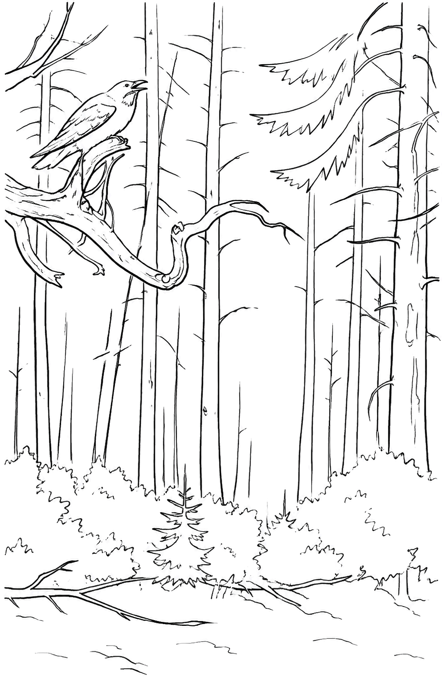

Блуждание в Волчьем Логе
Вы долго бродили по бурелому, прислушиваясь к зловещим звукам из чащи.
Что-то таинственное будто всё время пряталось за соседним кустом, но вы так ничего и не нашли.
Устав и продрогнув, вы наконец нашли дорогу обратно.
Возвращайтесь в усадьбу и запомните,
что ничего необычного вы не видели.